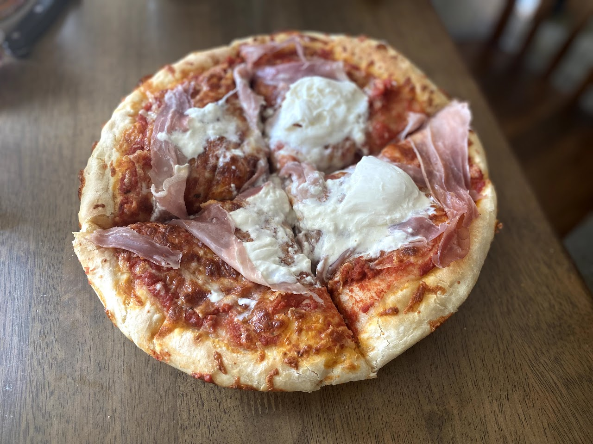

Cast Iron Skillet Pizza Recipe

Description
*Excerpt from Binging with Babish website*
This week on Basics, I'm taking another look at our beloved pizza and showing you how
to make great pan pizza at home using a cast iron skillet.
Ingredients
For the pizza dough (makes two 10-inch crusts)
- 16 ounces flour, plus more for work surface
- 2 tsp kosher salt
- 2 1/4 tsp active dry yeast
- 11 ounces room temperature water
- Olive oil
For the tomato sauce
- 1 28-ounce can of peeled San Marzano tomatoes (they taste better from the smaller cans)
- 2-3 cloves garlic
- Dried oregano and basil
- Red pepper flakes
- Kosher salt
- Freshly ground pepper
- Olive oil (optional)
Method
- Start by making your pizza dough. Combine flour, kosher salt, and active dry yeast in a big bowl.
- Add room temperature water and mix with a wooden spoon until a shaggy dough forms and no dry clumps remain.
- Generously oil a medium bowl with olive oil. Put the ball of dough into the bowl and cover with plastic wrap. Let rest for 18-24 hours.
- Once rested, turn the dough out onto a well-floured work surface. Cut the dough in half, as this will make 2 crusts for the cast iron skillet.
- Oil the skillet with olive oil. Place the dough in the plate and gently coax it to the edges using your fingers.
- Cover the plan with plastic wrap and let rest for at least one hour or until doubled in size. Now is also the time to preheat your oven- turn it on to its max heat settign and put a pizza stone in the oven as well.
- While your dough rises, make tomaot sauce. Combine tomatoes, garlic cloves, oregano, basil, red pepper flakes, salt, and pepper in a food processor or large cup for an immersion blender. Pulse a few timings until smooth. Optionally, add a dash of olive oil for extra flavor.
- Prepare your other toppings - I love to use prosciutto (or ham for lack thereof) and buratta cheese.
- Now that the dough is ready, top it with saurce edge to edge, then add the shredded mozzarella. Top with your toppings!
- Bake for about 11-12 minutes
- Top with freshly grated parmesan cheese and let rest for at least 5 minutes so you don't burn your mouth. Enjoy!